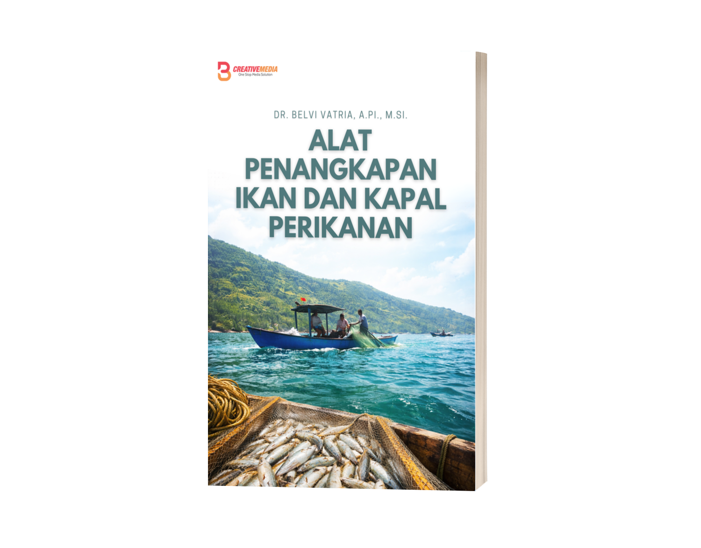
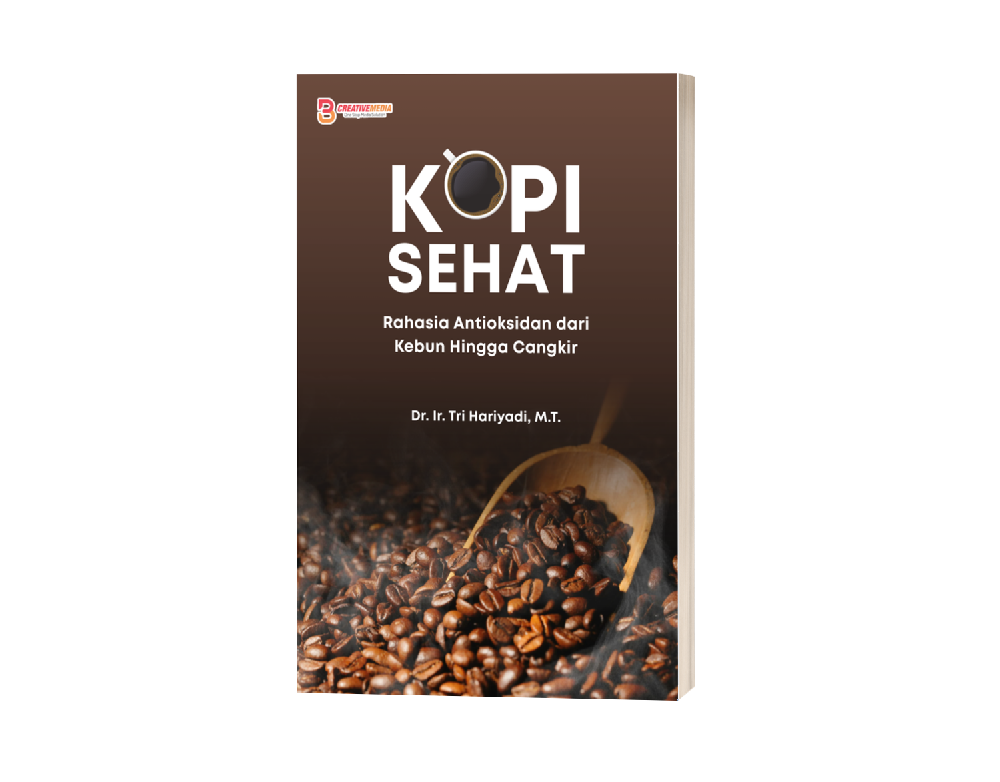
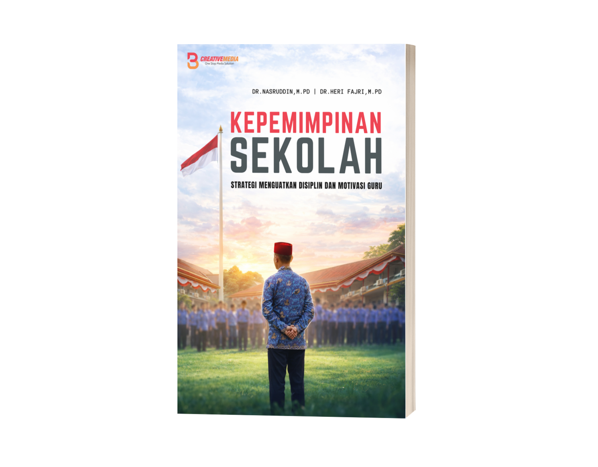
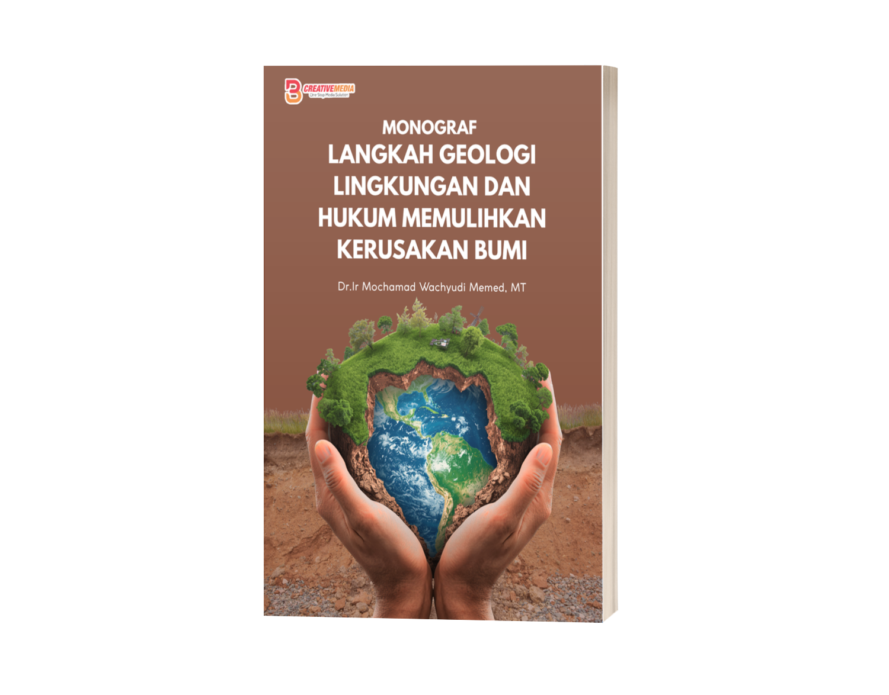
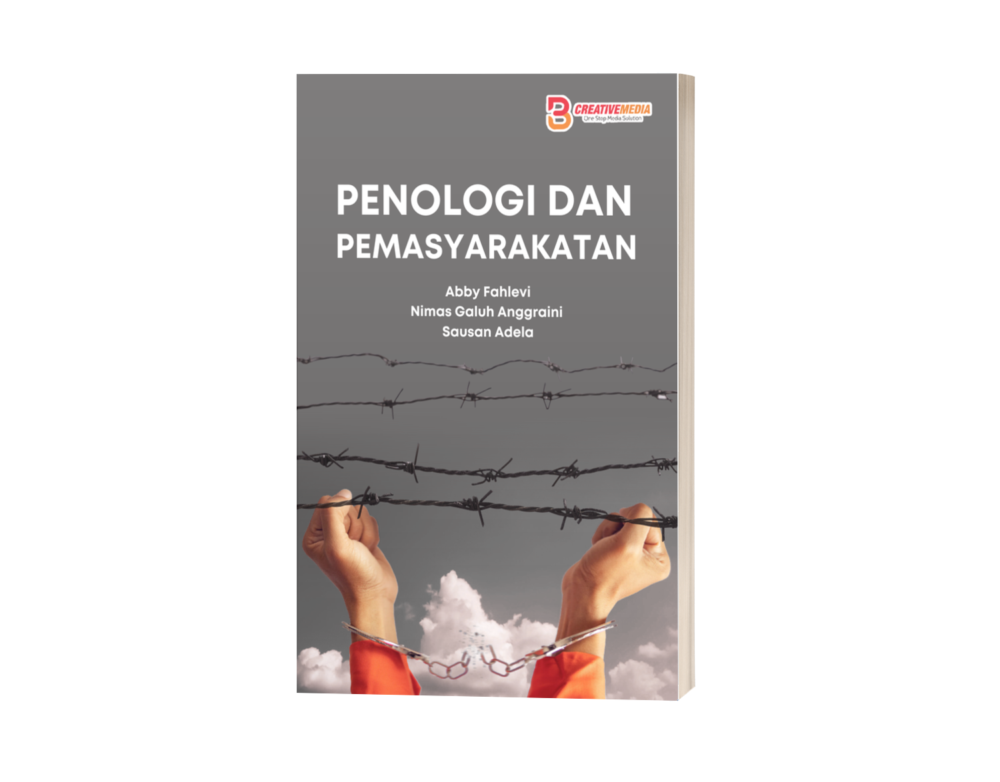
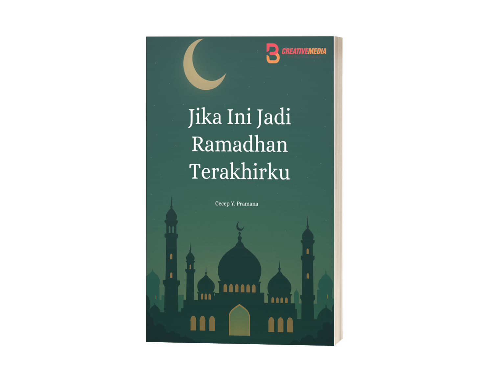
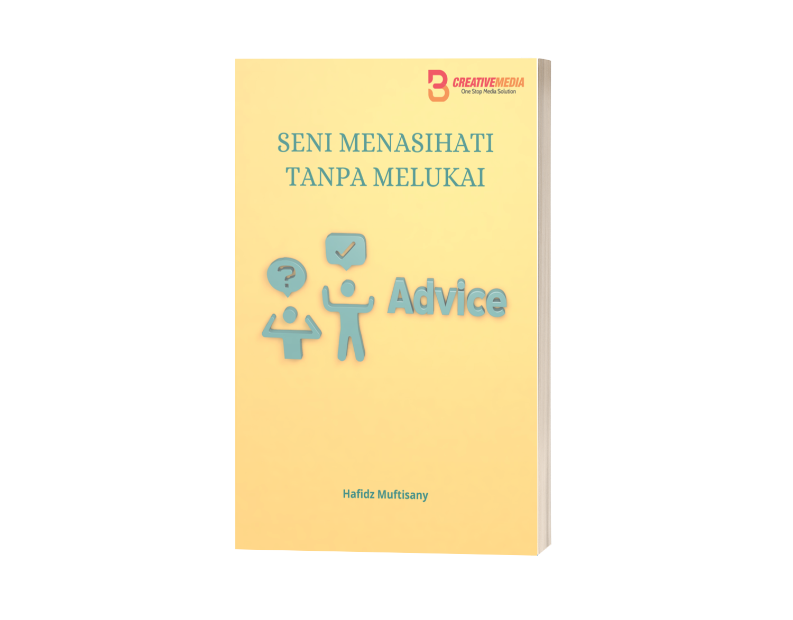

Portfolio Books
Hasil Project Buku
Beberapa buku yang saya layout dan desain selama program magang.

Alat Penangkapan Ikan dan Kapal Perikanan
Lihat BukuGovernance & Data
Lihat BukuAkuntabilitas Pengelolaan Dana Beasiswa Mahasiswa Kedokteran Papua
Lihat Buku
Kopi Sehat : Rahasia Antioksidan dari Kebun hingga Cangkir
Lihat BukuHukum dan Hak Asasi Manusia
Lihat BukuHukum Konstitusi
Lihat Buku
Kepemimpinan Sekolah: Strategi Menguatkan Disiplin dan Motivasi Guru
Lihat BukuMetode Penyelesaian Sengketa Internasional
Lihat Buku
Langkah Geologi Lingkungan dan Hukum, Memulihkan Kerusakan Bumi
Lihat Buku
Penologi dan Pemasyarakatan
Lihat Buku
Jika Ini Jadi Ramadhan Terakhirku
Lihat Buku
Seni Menasihati Tanpa Melukai
Lihat Buku
Social Media Design
Desain Media Sosial
Beberapa desain konten Instagram yang saya kerjakan selama magang.